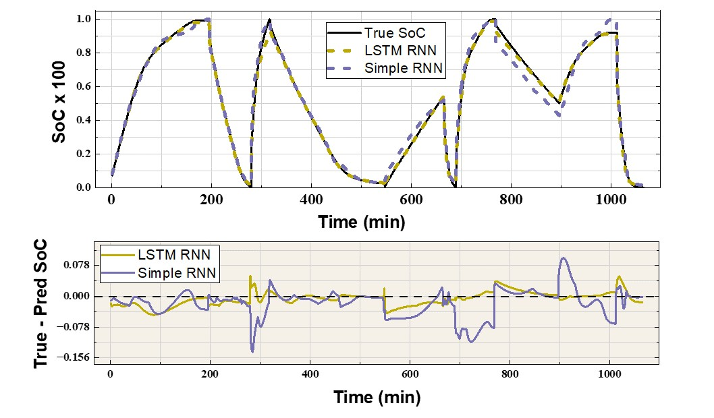

Machine learning based prediction of State of Charge of packed beds
Conference : International Cryogenic Engineering Conference / International Cryogenic Material Conference 2026
Venue : Daejeon, Republic of Korea (South Korea)
Abstract: Accurate estimation of the State of Charge (SoC) of a packed bed cryogenic energy recovery systems (PB-CERS) is essential for intelligent cold energy management. However, limited knowledge on the temperature distribution within the bed during PB-CERS operation makes the theoretical estimation of SoC challenging. This study evaluates and compares four machine learning (ML) models—MLP, XGB, Simple RNN, and LSTM RNN—for SoC prediction in a PB-CERS. To emulate real-time monitoring, the models were trained using measurable operating parameters: inlet mass flow rate, inlet temperature, and outlet temperature. The training and testing datasets were generated using a transient heat transfer model. Among the considered ML models, LSTM and Simple RNN exhibited higher testing R2 (0.993 and 0.982 for LSTM and simple RNN respectively), and showed better generalization capabilities while MLP and XGB models offered lower training times. The superior performance of the RNN models was due to their ability to capture the temporal evolution of the SoC and bed temperature. Overall, these results suggest that ML-based SoC prediction is a promising approach for real-time monitoring of PB-CERS. Further, the selection of an ML model for such an application may involve a trade-off between computational load and prediction performance.

Methodology: The time evolution of SoC is majorly influenced by the inlet operating conditions of the PB-CERS. These include mass flow rate, temperature during charge and discharge. Further, the initial temperature distribution within the bed also dictates the time evolution of the bed SoC and temperature. In this work, we first propose a set of input parameters for the prediction of SoC using ML. The necessary data comprising the inputs and the SoC values were generated using a one dimensional transient heat transfer model using LTNE framework. Further,standard ML steps were followed to execute the SoC prediction. Four ML models - XGB,MLP, simple and LSTM RNN were trained and tested using the generated datasets. The performance of these models was evaluated using R2 and RMSE metrics. For detialed methodology and results, please refer to the publication here →